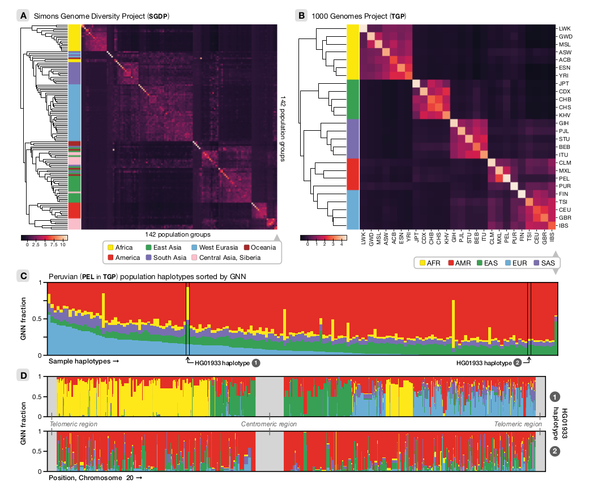

Hello world
Principles and Applications of Modern DNA Sequencing
EEEB GU4055
Session 1: Introduction to computational genomics
We will learn modern genomic methods
Based on reading and discussing the primary literature 
And we will learn to apply modern genomic methods
Through computational exercises in class and as assignments.
# simulate a chromosome from a coalescent tree_sequence
tree_sequence = ms.simulate(
sample_size=1000,
length=int(1e5),
Ne=int(1e5),
mutation_rate=1e-9,
recombination_rate=1e-10,
random_seed=10,
)
## calculate linkage disequilibrium across the chromosome
ldx = ms.LdCalculator(tree_sequence).get_r2_matrix()
Learning objectives
Learn to design, conduct, and analyze genomic experiments. By the end of class you should be able to:
1. Describe the structure of genomes and how information is represented in them.
2. Choose appropriate sequencing techniques for genomic experiments.
3. Analyze genomic data using computational methods.
THE SYLLABUS
def get_ref_locus_idxs(self):
idxs = []
with open(self.data) as indata:
liter = (indata.read().strip().split("|\n"))
for idx, loc in enumerate(liter):
lines = loc.split("\n")
snpline = loc[-1]
locidx, chidx, pos = snpline.split("|")[1].split(":")
names = [i.split()[0] for i in lines[:-1]]

Eaton Lab China expedition 2018

Limits on the application of genomics to phylogeny
Hello world
def wat(x, y):
for i in range(x):
y += x
return y
Hello world
Hello world
Slide 1


2018 sampling in Yunnan and Sichuan provinces, China
P. integrifolia
return
when curried, will become
a chain of functions, each
with a single argument
function(x) {
return function(y) {
return x + y;
};
}
Toytree documentation
Toytree documentation
Hello world
Pedicularis
Fading
hello
heereree